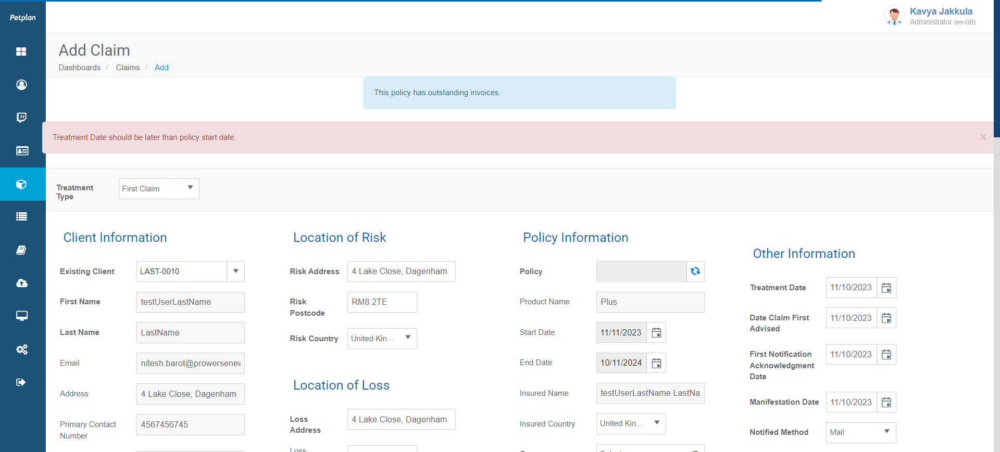

-
Verify Account Module Functionalities
0h 4m 3s+216ms
12:56:01 pmVerify Account Module Functionalities
11.24.2023 12:56:01 11.24.2023 13:00:04 0h 4m 3s+216msAll hyperlinks with icons on account page should workGiven User should log in with username "kavyajakkula" and password "VLJakkkav$9" to the admin panelWhen User clicks on account icon on left tool barWhen User clicks on iconThen User will redirect to respected pagehook.hooks.displayUrl(io.cucumber.java.Scenario)https://stage.petcovergroup.com:8888/Bank Information page displays with details after clicking on bank code link on manage bank detailsGiven User should log in with username "kavyajakkula" and password "VLJakkkav$9" to the admin panelWhen User clicks on account icon on left tool barWhen User clicks on bank iconAnd User clicks on bank code link on manage bank pageThen Bank information page displays with detailshook.hooks.displayUrl(io.cucumber.java.Scenario)https://stage.petcovergroup.com:8888/Add Bank page displays will all details when user clicks on add bank icon on manage bank pageGiven User should log in with username "kavyajakkula" and password "VLJakkkav$9" to the admin panelWhen User clicks on account icon on left tool barWhen User clicks on bank iconAnd User clicks on add bank icon on manage bank pageThen Add bank page displays with all detailshook.hooks.displayUrl(io.cucumber.java.Scenario)https://stage.petcovergroup.com:8888/Allocate Payment page displays will all details when user clicks on add receipt icon on manage receipt pageGiven User should log in with username "kavyajakkula" and password "VLJakkkav$9" to the admin panelWhen User clicks on account icon on left tool barWhen User clicks on manage receipt icon on account pageAnd User clicks on add receipt icon on manage receipt pageThen Allocate Payment page displays with all detailshook.hooks.displayUrl(io.cucumber.java.Scenario)https://stage.petcovergroup.com:8888/Add breach register page displays will all details when user clicks on Add breach register on manage breach register pageGiven User should log in with username "kavyajakkula" and password "VLJakkkav$9" to the admin panelWhen User clicks on account icon on left tool barWhen User clicks on manage breach registers iconAnd User clicks on Add breach register icon on manage breach register pageThen Add breach register page displays with all detailshook.hooks.displayUrl(io.cucumber.java.Scenario)https://stage.petcovergroup.com:8888/Filter Policy review information upon policy end date and to dateGiven User should log in with username "kavyajakkula" and password "VLJakkkav$9" to the admin panelWhen User clicks on account icon on left tool barWhen User clicks on policy review button on account pageAnd User enters policy end date and to date value on policy review pageAnd User clicks on search button on policy review pageThen Appropriate data displays on policy review page upon date valueshook.hooks.displayUrl(io.cucumber.java.Scenario)https://stage.petcovergroup.com:8888/Filter Process Credit Card Payment information upon payment due date and receipt dateGiven User should log in with username "kavyajakkula" and password "VLJakkkav$9" to the admin panelWhen User clicks on account icon on left tool barWhen User clicks on Process Credit Card button on account pageAnd User enters payment due date and receipt date value on Process Credit Card pageAnd User clicks on search button on Process Credit CardThen Appropriate data displays on Process Credit Card upon date valueshook.hooks.displayUrl(io.cucumber.java.Scenario)https://stage.petcovergroup.com:8888/ -
Verify Admin Module Features
0h 8m 53s+683ms
13:00:10 pmVerify Admin Module Features
11.24.2023 13:00:10 11.24.2023 13:09:04 0h 8m 53s+683msThe Letter Templates page should open with the list of existing Letter Templates.Given User should log in with username "kavyajakkula" and password "VLJakkkav$9" to the admin panelWhen User clicks on administration icon on left tool barAnd User clicks on letter template icon on administration pageThen User will able to see list of existing lettershook.hooks.displayUrl(io.cucumber.java.Scenario)https://stage.petcovergroup.com:8888/To check Edit Letter Template page should open with the template data in editable format.Given User should log in with username "kavyajakkula" and password "VLJakkkav$9" to the admin panelWhen User clicks on administration icon on left tool barAnd User clicks on letter template icon on administration pageAnd User clicks on edit icon against letter letter template name in listThen User will redirects to edit letter template pageAnd User will able to edit available fields on pagehook.hooks.displayUrl(io.cucumber.java.Scenario)https://stage.petcovergroup.com:8888/Verify that the Administration page displays with a set of icons and corresponding page should opens on clicking individual icon.Given User should log in with username "kavyajakkula" and password "VLJakkkav$9" to the admin panelWhen User clicks on administration icon on left tool barThen Account page displays with icons and corresponding page displays by clicking on icon.hook.hooks.displayUrl(io.cucumber.java.Scenario)https://stage.petcovergroup.com:8888/To verify whether View Product page displays with product details with status after by clicking on product code on manage product pageGiven User should log in with username "kavyajakkula" and password "VLJakkkav$9" to the admin panelWhen User clicks on administration icon on left tool barWhen User clicks on product icon administration pageAnd User clicks on product code on manage product pageThen View product page displays with all product detailshook.hooks.displayUrl(io.cucumber.java.Scenario)https://stage.petcovergroup.com:8888/To verify if insurer pop up windows displays by clicking on insurer configuration pop up on setting icon on manage product pageGiven User should log in with username "kavyajakkula" and password "VLJakkkav$9" to the admin panelWhen User clicks on administration icon on left tool barWhen User clicks on product icon administration pageAnd User clicks on insurer configuration iconThen Insurer configuration displays with all detailshook.hooks.displayUrl(io.cucumber.java.Scenario)https://stage.petcovergroup.com:8888/To verify if agent configuration pop up windows displays by clicking on agent configuration on setting icon on manage product pageGiven User should log in with username "kavyajakkula" and password "VLJakkkav$9" to the admin panelWhen User clicks on administration icon on left tool barWhen User clicks on product icon administration pageAnd User clicks on agent configuration iconThen Agent configuration displays with all detailshook.hooks.displayUrl(io.cucumber.java.Scenario)https://stage.petcovergroup.com:8888/Add department page displays will all details when user clicks on add department icon on manage department pageGiven User should log in with username "kavyajakkula" and password "VLJakkkav$9" to the admin panelWhen User clicks on administration icon on left tool barWhen User clicks on department icon on administrator pageAnd User clicks on add department icon on manage department pageThen Add department page displays with all detailshook.hooks.displayUrl(io.cucumber.java.Scenario)https://stage.petcovergroup.com:8888/Edit department page displays upon clicking on edit icon against department name inside list of department on manage department pageGiven User should log in with username "kavyajakkula" and password "VLJakkkav$9" to the admin panelWhen User clicks on administration icon on left tool barWhen User clicks on department icon on administrator pageAnd User clicks on edit icon against department name on manage department pageThen Edit department page displays in editable formathook.hooks.displayUrl(io.cucumber.java.Scenario)https://stage.petcovergroup.com:8888/Filter data of staff details upon department and active drop down options on manage staff pageGiven User should log in with username "kavyajakkula" and password "VLJakkkav$9" to the admin panelWhen User clicks on administration icon on left tool barWhen User clicks on staff icon on administrator pageAnd User selects options from department and active dropdownThen List of staff details filtered upon optionshook.hooks.displayUrl(io.cucumber.java.Scenario)https://stage.petcovergroup.com:8888/Add staff page displays with all details upon clicking on add staff icon on manage staff pageGiven User should log in with username "kavyajakkula" and password "VLJakkkav$9" to the admin panelWhen User clicks on administration icon on left tool barWhen User clicks on staff icon on administrator pageAnd User clicks on add staff icon on manage staff pageThen Add staff page displays with all detailshook.hooks.displayUrl(io.cucumber.java.Scenario)https://stage.petcovergroup.com:8888/Edit staff page displays upon clicking on edit icon against staff name inside list of staff on manage staff pageGiven User should log in with username "kavyajakkula" and password "VLJakkkav$9" to the admin panelWhen User clicks on administration icon on left tool barWhen User clicks on staff icon on administrator pageAnd User clicks on edit icon against staff name on manage staff pageThen Edit staff page displays in editable formathook.hooks.displayUrl(io.cucumber.java.Scenario)https://stage.petcovergroup.com:8888/Manage insurer page will displays with all details by clicking on insurer icon on Administrator pageGiven User should log in with username "kavyajakkula" and password "VLJakkkav$9" to the admin panelWhen User clicks on administration icon on left tool barWhen User clicks on insurer icon on administration pageThen Manage insurer page will displays with all detailshook.hooks.displayUrl(io.cucumber.java.Scenario)https://stage.petcovergroup.com:8888/View Insurer page displays with all insurer details after clicking on insurer code link on manage insurer pageGiven User should log in with username "kavyajakkula" and password "VLJakkkav$9" to the admin panelWhen User clicks on administration icon on left tool barWhen User clicks on insurer icon on administration pageAnd User clicks on insurerCode link on manage insurer pageThen View insurer page displays with current insurer detailshook.hooks.displayUrl(io.cucumber.java.Scenario)https://stage.petcovergroup.com:8888/On Manage insurer page list of data has filtered and displayed upon value of Type,Category,and Active drop downGiven User should log in with username "kavyajakkula" and password "VLJakkkav$9" to the admin panelWhen User clicks on administration icon on left tool barWhen User clicks on insurer icon on administration pageAnd User selects appropriate options from Type,Category and Active drop downThen On manage insurer page list of data reflects upon drop downs valueshook.hooks.displayUrl(io.cucumber.java.Scenario)https://stage.petcovergroup.com:8888/Add insurer page displays with all fields by clicking on add insurer icon on manage insurer pageGiven User should log in with username "kavyajakkula" and password "VLJakkkav$9" to the admin panelWhen User clicks on administration icon on left tool barWhen User clicks on insurer icon on administration pageAnd User clicks on add insurer icon on manage insurer pageThen Add insurer page displays with all fieldshook.hooks.displayUrl(io.cucumber.java.Scenario)https://stage.petcovergroup.com:8888/Edit insurer page displays in editable format by clicking on edit icon against insurer code on manage insurer pageGiven User should log in with username "kavyajakkula" and password "VLJakkkav$9" to the admin panelWhen User clicks on administration icon on left tool barWhen User clicks on insurer icon on administration pageAnd User clicks on edit icon against insurer code on manage insurer pageThen Edit insurer page displays in editable formathook.hooks.displayUrl(io.cucumber.java.Scenario)https://stage.petcovergroup.com:8888/View Agent page displays with all details by clicking on agent reference number on Manage agent pageGiven User should log in with username "kavyajakkula" and password "VLJakkkav$9" to the admin panelWhen User clicks on administration icon on left tool barWhen User clicks on agent iconAnd User clicks on agent reference number under list of agent detailsThen View agent page displays with all informationhook.hooks.displayUrl(io.cucumber.java.Scenario)https://stage.petcovergroup.com:8888/Filter details on manage agent page upon option of category,type and active drop downGiven User should log in with username "kavyajakkula" and password "VLJakkkav$9" to the admin panelWhen User clicks on administration icon on left tool barWhen User clicks on agent iconAnd User Selects appropriate option from category,type and active drop downAnd User clicks on search button on manage agent pageThen Appropriate agent details displays on manage agent pagehook.hooks.displayUrl(io.cucumber.java.Scenario)https://stage.petcovergroup.com:8888/Add agent page displays with all details by clicking on add agent button on manage agent pageGiven User should log in with username "kavyajakkula" and password "VLJakkkav$9" to the admin panelWhen User clicks on administration icon on left tool barWhen User clicks on agent iconAnd User clicks on add agent button on manage agent pageThen Add agent page displays with all detailshook.hooks.displayUrl(io.cucumber.java.Scenario)https://stage.petcovergroup.com:8888/Manage Company page displays with list of companies by clicking on company icon on administration pageGiven User should log in with username "kavyajakkula" and password "VLJakkkav$9" to the admin panelWhen User clicks on administration icon on left tool barWhen User clicks on company iconThen Manage company page displays with list of available companieshook.hooks.displayUrl(io.cucumber.java.Scenario)https://stage.petcovergroup.com:8888/Filter details on manage company page upon option of state and country drop downGiven User should log in with username "kavyajakkula" and password "VLJakkkav$9" to the admin panelWhen User clicks on administration icon on left tool barWhen User clicks on company iconAnd User selects options from state and country drop downThen Appropriate list of company displays on manage company pagehook.hooks.displayUrl(io.cucumber.java.Scenario)https://stage.petcovergroup.com:8888/Add company page displays with all details by clicking on add company button on manage company pageGiven User should log in with username "kavyajakkula" and password "VLJakkkav$9" to the admin panelWhen User clicks on administration icon on left tool barWhen User clicks on company iconAnd User clicks on add company button on manage company pageThen Add company page displays with all detailshook.hooks.displayUrl(io.cucumber.java.Scenario)https://stage.petcovergroup.com:8888/ -
Verify Approve Claim Module Features
0h 0m 9s+545ms
13:09:11 pmVerify Approve Claim Module Features
11.24.2023 13:09:11 11.24.2023 13:09:20 0h 0m 9s+545msVerify that the Approve Claim page displays with data in the table after clicking on approve claim icon on dashboard pageGiven User should log in with username "kavyajakkula" and password "VLJakkkav$9" to the admin panelWhen User clicks on approve claims icon on left tool barThen User will redirect to page with "Approve Claim" message on itAnd User will able to see data on approve claims pagehook.hooks.displayUrl(io.cucumber.java.Scenario)https://stage.petcovergroup.com:8888/ -
Verify Client Module Features
0h 3m 8s+569ms
13:09:28 pmVerify Client Module Features
11.24.2023 13:09:28 11.24.2023 13:12:36 0h 3m 8s+569msEnsure that the Manage Client page displays list of client data after clicking on client icon on left tool barGiven User should log in with username "kavyajakkula" and password "VLJakkkav$9" to the admin panelWhen User clicks on client icon on left tool barThen Manage client page displays with list of clientshook.hooks.displayUrl(io.cucumber.java.Scenario)https://stage.petcovergroup.com:8888/view client page should displays with all details for each client code link on manage client pageGiven User should log in with username "kavyajakkula" and password "VLJakkkav$9" to the admin panelWhen User clicks on client icon on left tool barWhen User clicks on client code link on manage client pageThen View client page displays with all detailshook.hooks.displayUrl(io.cucumber.java.Scenario)https://stage.petcovergroup.com:8888/Add quote page should display in editable format by clicking on add quote icon on cog dropdown menu on view client pageGiven User should log in with username "kavyajakkula" and password "VLJakkkav$9" to the admin panelWhen User clicks on client icon on left tool barWhen User clicks on add quote icon on cog dropdown menu on manage client pageThen Add quote page should display in editable formathook.hooks.displayUrl(io.cucumber.java.Scenario)https://stage.petcovergroup.com:8888/hook.hooks.takeScreenShotOnFailure(io.cucumber.java.Scenario) Policies details of client displays by clicking on policy tab on view client pageGiven User should log in with username "kavyajakkula" and password "VLJakkkav$9" to the admin panelWhen User clicks on client icon on left tool barWhen User clicks on client code on manage client pageAnd User clicks on policy tab on view client pageThen Policies details should display on view client pageStep skippedhook.hooks.displayUrl(io.cucumber.java.Scenario)https://stage.petcovergroup.com:8888/hook.hooks.takeScreenShotOnFailure(io.cucumber.java.Scenario)
Policies details of client displays by clicking on policy tab on view client pageGiven User should log in with username "kavyajakkula" and password "VLJakkkav$9" to the admin panelWhen User clicks on client icon on left tool barWhen User clicks on client code on manage client pageAnd User clicks on policy tab on view client pageThen Policies details should display on view client pageStep skippedhook.hooks.displayUrl(io.cucumber.java.Scenario)https://stage.petcovergroup.com:8888/hook.hooks.takeScreenShotOnFailure(io.cucumber.java.Scenario) Claims details of client displays by clicking on claim tab on view client pageGiven User should log in with username "kavyajakkula" and password "VLJakkkav$9" to the admin panelWhen User clicks on client icon on left tool barWhen User clicks on client code on manage client pageAnd User clicks on claim tab on view client pageThen Claim details should display on view client pageStep skippedhook.hooks.displayUrl(io.cucumber.java.Scenario)https://stage.petcovergroup.com:8888/hook.hooks.takeScreenShotOnFailure(io.cucumber.java.Scenario)
Claims details of client displays by clicking on claim tab on view client pageGiven User should log in with username "kavyajakkula" and password "VLJakkkav$9" to the admin panelWhen User clicks on client icon on left tool barWhen User clicks on client code on manage client pageAnd User clicks on claim tab on view client pageThen Claim details should display on view client pageStep skippedhook.hooks.displayUrl(io.cucumber.java.Scenario)https://stage.petcovergroup.com:8888/hook.hooks.takeScreenShotOnFailure(io.cucumber.java.Scenario) Contacts details of client displays by clicking on contact tab on view client pageGiven User should log in with username "kavyajakkula" and password "VLJakkkav$9" to the admin panelWhen User clicks on client icon on left tool barWhen User clicks on client code on manage client pageAnd User clicks on contact tab on view client pageThen Contact details should display on view client pageStep skippedhook.hooks.displayUrl(io.cucumber.java.Scenario)https://stage.petcovergroup.com:8888/hook.hooks.takeScreenShotOnFailure(io.cucumber.java.Scenario)
Contacts details of client displays by clicking on contact tab on view client pageGiven User should log in with username "kavyajakkula" and password "VLJakkkav$9" to the admin panelWhen User clicks on client icon on left tool barWhen User clicks on client code on manage client pageAnd User clicks on contact tab on view client pageThen Contact details should display on view client pageStep skippedhook.hooks.displayUrl(io.cucumber.java.Scenario)https://stage.petcovergroup.com:8888/hook.hooks.takeScreenShotOnFailure(io.cucumber.java.Scenario) Notes details of client displays by clicking on notes tab on view client pageGiven User should log in with username "kavyajakkula" and password "VLJakkkav$9" to the admin panelWhen User clicks on client icon on left tool barWhen User clicks on client code on manage client pageAnd User clicks on notes tab on view client pageThen Notes details should display on view client pageStep skippedhook.hooks.displayUrl(io.cucumber.java.Scenario)https://stage.petcovergroup.com:8888/hook.hooks.takeScreenShotOnFailure(io.cucumber.java.Scenario)
Notes details of client displays by clicking on notes tab on view client pageGiven User should log in with username "kavyajakkula" and password "VLJakkkav$9" to the admin panelWhen User clicks on client icon on left tool barWhen User clicks on client code on manage client pageAnd User clicks on notes tab on view client pageThen Notes details should display on view client pageStep skippedhook.hooks.displayUrl(io.cucumber.java.Scenario)https://stage.petcovergroup.com:8888/hook.hooks.takeScreenShotOnFailure(io.cucumber.java.Scenario) Task details of client displays by clicking on task tab on view client pageGiven User should log in with username "kavyajakkula" and password "VLJakkkav$9" to the admin panelWhen User clicks on client icon on left tool barWhen User clicks on client code on manage client pageAnd User clicks on task tab on view client pageThen Task details should display on view client pageStep skippedhook.hooks.displayUrl(io.cucumber.java.Scenario)https://stage.petcovergroup.com:8888/hook.hooks.takeScreenShotOnFailure(io.cucumber.java.Scenario)
Task details of client displays by clicking on task tab on view client pageGiven User should log in with username "kavyajakkula" and password "VLJakkkav$9" to the admin panelWhen User clicks on client icon on left tool barWhen User clicks on client code on manage client pageAnd User clicks on task tab on view client pageThen Task details should display on view client pageStep skippedhook.hooks.displayUrl(io.cucumber.java.Scenario)https://stage.petcovergroup.com:8888/hook.hooks.takeScreenShotOnFailure(io.cucumber.java.Scenario)
-
Verify DashBoard Items
0h 0m 6s+473ms
13:12:45 pmVerify DashBoard Items
11.24.2023 13:12:45 11.24.2023 13:12:52 0h 0m 6s+473msVerify Client,Quote,Policy,Claim details on dash board pageGiven User should log in with username "kavyajakkula" and password "VLJakkkav$9" to the admin panelThen Dash board page displays with total and monthly numbers of client,quote,policy and claimhook.hooks.displayUrl(io.cucumber.java.Scenario)https://stage.petcovergroup.com:8888/ -
Launched Page Verification by displayed text
0h 0m 1s+218ms
13:12:59 pmLaunched Page Verification by displayed text
11.24.2023 13:12:59 11.24.2023 13:13:00 0h 0m 1s+218msCheck displayed text on homepageGiven User is one the website login pageWhen User verify admin login page through urlThen User will able to see text "(en-GB)" behind copyright messagehook.hooks.displayUrl(io.cucumber.java.Scenario)https://stage.petcovergroup.com:8888/ -
Verify Log out functionality
0h 0m 14s+126ms
13:13:06 pmVerify Log out functionality
11.24.2023 13:13:06 11.24.2023 13:13:20 0h 0m 14s+126msVerify log out feature of systemGiven User should log in with username "kavyajakkula" and password "VLJakkkav$9" to the admin panelWhen User clicks on Logoff buttonThen User will redirect to login pagehook.hooks.displayUrl(io.cucumber.java.Scenario)https://stage.petcovergroup.com:8888/ -
Login To Admin Panel
0h 0m 10s+379ms
13:13:28 pmLogin To Admin Panel
11.24.2023 13:13:28 11.24.2023 13:13:38 0h 0m 10s+379msVerify Login eventGiven User is one the website login pageAnd User enters username "kavyajakkula" and password "VLJakkkav$9" and click signIn buttonThen User will be able to see dashBoardAnd User will be able to see "(en-GB)" text on right top corner of pagehook.hooks.displayUrl(io.cucumber.java.Scenario)https://stage.petcovergroup.com:8888/ -
Verify Manage Claim Module Features
0h 3m 5s+292ms
13:13:44 pmVerify Manage Claim Module Features
11.24.2023 13:13:44 11.24.2023 13:16:50 0h 3m 5s+292msManage claims page should open with the claim details after clicking on manage claim icon on left tool barGiven User should log in with username "kavyajakkula" and password "VLJakkkav$9" to the admin panelWhen User clicks on manage claims icon on left tool barThen User will able see all data available on manage claim pagehook.hooks.displayUrl(io.cucumber.java.Scenario)https://stage.petcovergroup.com:8888/All data under date column displays with dd-mm-yyyy format and data under amount should prefixed by sign on manage claim pageGiven User should log in with username "kavyajakkula" and password "VLJakkkav$9" to the admin panelWhen User clicks on manage claims icon on left tool barThen All data under treatment and cliam first advised date column displays in dd-mm-yyyy formatThen All data under Amount paybale column prefixed by signhook.hooks.displayUrl(io.cucumber.java.Scenario)https://stage.petcovergroup.com:8888/User will redirect to respected claim information page by clicking on claim number link on manage claim pageGiven User should log in with username "kavyajakkula" and password "VLJakkkav$9" to the admin panelWhen User clicks on manage claims icon on left tool barWhen User clicks on claim number on manage claim pageThen User will redirects to respected claim information pagehook.hooks.displayUrl(io.cucumber.java.Scenario)https://stage.petcovergroup.com:8888/Verify edit claim page displays after clicking on edit claim icon on manage claim pageGiven User should log in with username "kavyajakkula" and password "VLJakkkav$9" to the admin panelWhen User clicks on manage claims icon on left tool barWhen User clicks on edit claim icon on cog icon on manage claim pageThen Edit claim page displays with editable formhook.hooks.displayUrl(io.cucumber.java.Scenario)https://stage.petcovergroup.com:8888/Verify view policy page displays after clicking on view policy icon on manage claim pageGiven User should log in with username "kavyajakkula" and password "VLJakkkav$9" to the admin panelWhen User clicks on manage claims icon on left tool barWhen User clicks on view policy icon on cog icon on manage claim pageThen View policy page displays with all detailshook.hooks.displayUrl(io.cucumber.java.Scenario)https://stage.petcovergroup.com:8888/Filter Claim details on manage claim page upon option from claim status drop downGiven User should log in with username "kavyajakkula" and password "VLJakkkav$9" to the admin panelWhen User clicks on manage claims icon on left tool barWhen User selects appropriate option from claim status dropdownAnd User clicks on search button on manage claim pageThen Details of claim on manage claim page filters upon status drop dwon optionhook.hooks.displayUrl(io.cucumber.java.Scenario)https://stage.petcovergroup.com:8888/Filter Claim details on manage claim page upon option from treatment status drop downGiven User should log in with username "kavyajakkula" and password "VLJakkkav$9" to the admin panelWhen User clicks on manage claims icon on left tool barWhen User selects appropriate option from treatment status drop downAnd User clicks on search button on manage claim pageThen Details of claim on manage claim page filters upon treatment status drop down optionhook.hooks.displayUrl(io.cucumber.java.Scenario)https://stage.petcovergroup.com:8888/ -
Verify Policy Module Features
0h 0m 44s+100ms
13:16:56 pmVerify Policy Module Features
11.24.2023 13:16:56 11.24.2023 13:17:40 0h 0m 44s+100msAdd claim for existing policyGiven User should log in with username "kavyajakkula" and password "VLJakkkav$9" to the admin panelWhen User clicks on policy icon on left tool barWhen User click on policy icon and selects add claim icon for existing policyAnd User enters claim detailsAnd User clicks on save buttonhook.hooks.displayUrl(io.cucumber.java.Scenario)https://stage.petcovergroup.com:8888/hook.hooks.takeScreenShotOnFailure(io.cucumber.java.Scenario) -
Verify Quote Module Features
0h 2m 41s+591ms
13:17:48 pmVerify Quote Module Features
11.24.2023 13:17:48 11.24.2023 13:20:30 0h 2m 41s+591msGenerate and save quote for professional breed using credit and debit card optionGiven User should log in with username "kavyajakkula" and password "VLJakkkav$9" to the admin panelWhen User clicks on quote icon on left tool barWhen User clicks on add quote buttonAnd User selects the professional value of form product dropdownAnd User enters client details form "client/client.json"And User enters professional species informationAnd User calculate premium value for professional and generate policy using credit and debit card optionhook.hooks.displayUrl(io.cucumber.java.Scenario)https://stage.petcovergroup.com:8888/Generate and save quote for professional breed using direct debit payment optionGiven User should log in with username "kavyajakkula" and password "VLJakkkav$9" to the admin panelWhen User clicks on quote icon on left tool barWhen User clicks on add quote buttonAnd User selects the professional value of form product dropdownAnd User enters client details form "client/client.json"And User enters professional species informationAnd User calculate premium value for professional and generate policy using direct debit payment optionhook.hooks.displayUrl(io.cucumber.java.Scenario)https://stage.petcovergroup.com:8888/ -
Verify Report Module Features
0h 0m 40s+681ms
13:20:37 pmVerify Report Module Features
11.24.2023 13:20:37 11.24.2023 13:21:17 0h 0m 40s+681msAll hyperlinks with icons on setting page should workGiven User should log in with username "kavyajakkula" and password "VLJakkkav$9" to the admin panelWhen User clicks on reports icon on left tool barThen User will able to see total six section of report categoryhook.hooks.displayUrl(io.cucumber.java.Scenario)https://stage.petcovergroup.com:8888/User will able to redirect on respected report page by clicking on report icon on report pageGiven User should log in with username "kavyajakkula" and password "VLJakkkav$9" to the admin panelWhen User clicks on reports icon on left tool barWhen User clicks on reports iconThen Respected report page displayshook.hooks.displayUrl(io.cucumber.java.Scenario)https://stage.petcovergroup.com:8888/ -
Verify Setting Module Features
0h 16m 54s+32ms
13:21:25 pmVerify Setting Module Features
11.24.2023 13:21:25 11.24.2023 13:38:19 0h 16m 54s+32msAll hyperlinks with icons on setting page should workGiven User should log in with username "kavyajakkula" and password "VLJakkkav$9" to the admin panelWhen User clicks on look up values icon on left tool barWhen User clicks on icon on setting pageThen User will able to redirect to respected pagehook.hooks.displayUrl(io.cucumber.java.Scenario)https://stage.petcovergroup.com:8888/To verify whether Manage Policy Type page displays with policy type details by clicking on policy type icon on setting pageGiven User should log in with username "kavyajakkula" and password "VLJakkkav$9" to the admin panelWhen User clicks on look up values icon on left tool barWhen User clicks on policy type icon setting pageThen Manage Policy Type page displays with all policy type detailshook.hooks.displayUrl(io.cucumber.java.Scenario)https://stage.petcovergroup.com:8888/Add policy type page displays will all details when user clicks on add policy type icon on manage policy type pageGiven User should log in with username "kavyajakkula" and password "VLJakkkav$9" to the admin panelWhen User clicks on look up values icon on left tool barWhen User clicks on policy type icon setting pageAnd User clicks on add policy type icon on manage policy type pageThen Add policy type page displays with all detailshook.hooks.displayUrl(io.cucumber.java.Scenario)https://stage.petcovergroup.com:8888/Edit policy type page displays upon clicking on edit icon against policy type on manage policy type pageGiven User should log in with username "kavyajakkula" and password "VLJakkkav$9" to the admin panelWhen User clicks on look up values icon on left tool barWhen User clicks on policy type icon setting pageAnd User clicks on edit icon against policy type on manage policy type pageThen Edit policy type page displays in editable formathook.hooks.displayUrl(io.cucumber.java.Scenario)https://stage.petcovergroup.com:8888/To verify whether Manage client class page displays with client class details by clicking on client lass icon on setting pageGiven User should log in with username "kavyajakkula" and password "VLJakkkav$9" to the admin panelWhen User clicks on look up values icon on left tool barWhen User clicks on client class icon setting pageThen Manage client class page displays with all client class detailshook.hooks.displayUrl(io.cucumber.java.Scenario)https://stage.petcovergroup.com:8888/Add client class page displays will all details when user clicks on add client class icon on manage class client pageGiven User should log in with username "kavyajakkula" and password "VLJakkkav$9" to the admin panelWhen User clicks on look up values icon on left tool barWhen User clicks on client class icon setting pageAnd User clicks on add client class icon on manage class client pageThen Add client class page displays with all detailshook.hooks.displayUrl(io.cucumber.java.Scenario)https://stage.petcovergroup.com:8888/Edit client class page displays upon clicking on edit icon against client class icon on manage client class pageGiven User should log in with username "kavyajakkula" and password "VLJakkkav$9" to the admin panelWhen User clicks on look up values icon on left tool barWhen User clicks on client class icon setting pageAnd User clicks on edit icon against client class name on manage client class pageThen Edit client class page displays in editable formathook.hooks.displayUrl(io.cucumber.java.Scenario)https://stage.petcovergroup.com:8888/To verify whether Manage insurer class page displays with insurer class details by clicking on insurer lass icon on setting pageGiven User should log in with username "kavyajakkula" and password "VLJakkkav$9" to the admin panelWhen User clicks on look up values icon on left tool barWhen User clicks on insurer class icon setting pageThen Manage insurer class page displays with all client class detailshook.hooks.displayUrl(io.cucumber.java.Scenario)https://stage.petcovergroup.com:8888/Add Insurer class page displays will all details when user clicks on add insurer class icon on manage insurer class pageGiven User should log in with username "kavyajakkula" and password "VLJakkkav$9" to the admin panelWhen User clicks on look up values icon on left tool barWhen User clicks on insurer class icon setting pageAnd User clicks on add insurer class icon on manage insurer class pageThen Add insurer class page displays with all detailshook.hooks.displayUrl(io.cucumber.java.Scenario)https://stage.petcovergroup.com:8888/Edit Insurer class page displays upon clicking on edit icon against insurer icon on manage insurer class pageGiven User should log in with username "kavyajakkula" and password "VLJakkkav$9" to the admin panelWhen User clicks on look up values icon on left tool barWhen User clicks on insurer class icon setting pageAnd User clicks on edit icon against insurer icon on manage insurer class pageThen Edit insurer class page displays in editable formathook.hooks.displayUrl(io.cucumber.java.Scenario)https://stage.petcovergroup.com:8888/To verify whether Manage division page displays with division details by clicking on division icon on setting pageGiven User should log in with username "kavyajakkula" and password "VLJakkkav$9" to the admin panelWhen User clicks on look up values icon on left tool barWhen User clicks on division icon setting pageThen Manage division page displays with all division detailshook.hooks.displayUrl(io.cucumber.java.Scenario)https://stage.petcovergroup.com:8888/Add division page displays will all details when user clicks on add division icon on manage division pageGiven User should log in with username "kavyajakkula" and password "VLJakkkav$9" to the admin panelWhen User clicks on look up values icon on left tool barWhen User clicks on division icon setting pageAnd User clicks on add division icon on manage division pageThen Add division page displays with all detailshook.hooks.displayUrl(io.cucumber.java.Scenario)https://stage.petcovergroup.com:8888/Edit division page displays upon clicking on edit icon against division name on manage division pageGiven User should log in with username "kavyajakkula" and password "VLJakkkav$9" to the admin panelWhen User clicks on look up values icon on left tool barWhen User clicks on division icon setting pageAnd User clicks on edit icon icon against division name on manage division pageThen Edit division page displays in editable formathook.hooks.displayUrl(io.cucumber.java.Scenario)https://stage.petcovergroup.com:8888/To verify whether Manage branch page displays with branch details by clicking on branch icon on setting pageGiven User should log in with username "kavyajakkula" and password "VLJakkkav$9" to the admin panelWhen User clicks on look up values icon on left tool barWhen User clicks on branch icon setting pageThen Manage branch page displays with all branch detailshook.hooks.displayUrl(io.cucumber.java.Scenario)https://stage.petcovergroup.com:8888/Add branch page displays will all details when user clicks on add branch icon on manage branch pageGiven User should log in with username "kavyajakkula" and password "VLJakkkav$9" to the admin panelWhen User clicks on look up values icon on left tool barWhen User clicks on branch icon setting pageAnd User clicks on add branch icon on manage branch pageThen Add branch page displays with all detailshook.hooks.displayUrl(io.cucumber.java.Scenario)https://stage.petcovergroup.com:8888/Edit branch page displays upon clicking on edit icon against branch code on manage branch pageGiven User should log in with username "kavyajakkula" and password "VLJakkkav$9" to the admin panelWhen User clicks on look up values icon on left tool barWhen User clicks on branch icon setting pageAnd User clicks on edit icon against branch code on manage branch pageThen Edit branch page displays in editable formathook.hooks.displayUrl(io.cucumber.java.Scenario)https://stage.petcovergroup.com:8888/To verify whether Manage change area page displays with area details by clicking on change area icon on setting pageGiven User should log in with username "kavyajakkula" and password "VLJakkkav$9" to the admin panelWhen User clicks on look up values icon on left tool barWhen User clicks on change area icon setting pageThen Manage change area page displays with all area detailshook.hooks.displayUrl(io.cucumber.java.Scenario)https://stage.petcovergroup.com:8888/Add change area page displays will all details when user clicks on add change area icon on manage change area pageGiven User should log in with username "kavyajakkula" and password "VLJakkkav$9" to the admin panelWhen User clicks on look up values icon on left tool barWhen User clicks on change area icon setting pageAnd User clicks on add change area icon on manage change area pageThen Add change area page displays with all detailshook.hooks.displayUrl(io.cucumber.java.Scenario)https://stage.petcovergroup.com:8888/Edit change area page displays upon clicking on edit icon against change area name on manage change area pageGiven User should log in with username "kavyajakkula" and password "VLJakkkav$9" to the admin panelWhen User clicks on look up values icon on left tool barWhen User clicks on change area icon setting pageAnd User clicks on edit icon against change area name on manage change area pageThen Edit change area page displays in editable formathook.hooks.displayUrl(io.cucumber.java.Scenario)https://stage.petcovergroup.com:8888/To verify whether Manage sex page of pet displays with pet sex details by clicking on change sex icon on setting pageGiven User should log in with username "kavyajakkula" and password "VLJakkkav$9" to the admin panelWhen User clicks on look up values icon on left tool barWhen User clicks on sex icon on setting pageThen Manage sex page displays with all area detailshook.hooks.displayUrl(io.cucumber.java.Scenario)https://stage.petcovergroup.com:8888/Add sex page of pet displays will all details when user clicks on add sex icon on manage sex pageGiven User should log in with username "kavyajakkula" and password "VLJakkkav$9" to the admin panelWhen User clicks on look up values icon on left tool barWhen User clicks on sex icon on setting pageAnd User clicks on add sex icon on manage sex pageThen Add sex page of pet displays with all detailshook.hooks.displayUrl(io.cucumber.java.Scenario)https://stage.petcovergroup.com:8888/Edit sex page of pet displays upon clicking on edit icon against sex class on manage sex page of petGiven User should log in with username "kavyajakkula" and password "VLJakkkav$9" to the admin panelWhen User clicks on look up values icon on left tool barWhen User clicks on sex icon on setting pageAnd User clicks on edit icon against sex class on manage sex page of petThen Edit sex page of pet displays in editable formathook.hooks.displayUrl(io.cucumber.java.Scenario)https://stage.petcovergroup.com:8888/To verify whether Manage Debtor Codes of pet displays with debtor code details by clicking on debtor code icon on setting pageGiven User should log in with username "kavyajakkula" and password "VLJakkkav$9" to the admin panelWhen User clicks on look up values icon on left tool barWhen User clicks on debtor code on setting pageThen Manage Debtor Codes page displays with all debtor code detailshook.hooks.displayUrl(io.cucumber.java.Scenario)https://stage.petcovergroup.com:8888/Add Debtor Codes page of displays will all details when user clicks on add Debtor Code icon on manage Debtor Codes pageGiven User should log in with username "kavyajakkula" and password "VLJakkkav$9" to the admin panelWhen User clicks on look up values icon on left tool barWhen User clicks on debtor code on setting pageAnd User clicks on add debtor code icon on manage debtor code pageThen Add debtor code page displays with all detailshook.hooks.displayUrl(io.cucumber.java.Scenario)https://stage.petcovergroup.com:8888/Edit debtor code page displays upon clicking on edit icon against debtor code name on manage debtor pageGiven User should log in with username "kavyajakkula" and password "VLJakkkav$9" to the admin panelWhen User clicks on look up values icon on left tool barWhen User clicks on debtor code on setting pageAnd User clicks on edit icon against debtor code name on manage debtor pageThen Edit debtor page displays in editable formathook.hooks.displayUrl(io.cucumber.java.Scenario)https://stage.petcovergroup.com:8888/To verify whether Manage renewal type page displays with renewal type details by clicking on renewal type icon on setting pageGiven User should log in with username "kavyajakkula" and password "VLJakkkav$9" to the admin panelWhen User clicks on look up values icon on left tool barWhen User clicks on renewal type icon on setting pageThen Manage renewal type page displays with all debtor code detailshook.hooks.displayUrl(io.cucumber.java.Scenario)https://stage.petcovergroup.com:8888/Add renewal type page displays will all details when user clicks on add renewal type icon on manage renewal type pageGiven User should log in with username "kavyajakkula" and password "VLJakkkav$9" to the admin panelWhen User clicks on look up values icon on left tool barWhen User clicks on renewal type icon on setting pageAnd User clicks on add renewal type icon on manage debtor code pageThen Add renewal type page displays with all detailshook.hooks.displayUrl(io.cucumber.java.Scenario)https://stage.petcovergroup.com:8888/Edit renewal type page displays upon clicking on edit icon against renewal type name on manage renewal type pageGiven User should log in with username "kavyajakkula" and password "VLJakkkav$9" to the admin panelWhen User clicks on look up values icon on left tool barWhen User clicks on renewal type icon on setting pageAnd User clicks on edit icon against renewal type name on manage renewal type pageThen Edit renewal type page displays in editable formathook.hooks.displayUrl(io.cucumber.java.Scenario)https://stage.petcovergroup.com:8888/To verify whether Manage task type page displays with task type details by clicking on task type icon on setting pageGiven User should log in with username "kavyajakkula" and password "VLJakkkav$9" to the admin panelWhen User clicks on look up values icon on left tool barWhen User clicks on task type icon on setting pageThen Manage task type page displays with all task detailshook.hooks.displayUrl(io.cucumber.java.Scenario)https://stage.petcovergroup.com:8888/Add task type page displays will all details when user clicks on add task type icon on manage task type pageGiven User should log in with username "kavyajakkula" and password "VLJakkkav$9" to the admin panelWhen User clicks on look up values icon on left tool barWhen User clicks on task type icon on setting pageAnd User clicks on add task type icon on manage task type pageThen Add task type page displays with all detailshook.hooks.displayUrl(io.cucumber.java.Scenario)https://stage.petcovergroup.com:8888/Edit task type page displays upon clicking on edit icon against task type name on manage task type pageGiven User should log in with username "kavyajakkula" and password "VLJakkkav$9" to the admin panelWhen User clicks on look up values icon on left tool barWhen User clicks on task type icon on setting pageAnd User clicks on edit icon against task type name on manage task type pageThen Edit task type page displays in editable formathook.hooks.displayUrl(io.cucumber.java.Scenario)https://stage.petcovergroup.com:8888/To verify whether Manage task status page displays with task status details by clicking on task status icon on setting pageGiven User should log in with username "kavyajakkula" and password "VLJakkkav$9" to the admin panelWhen User clicks on look up values icon on left tool barWhen User clicks on task status icon on setting pageThen Manage task status page displays with all task detailshook.hooks.displayUrl(io.cucumber.java.Scenario)https://stage.petcovergroup.com:8888/Add task status page displays will all details when user clicks on add task status icon on manage task status pageGiven User should log in with username "kavyajakkula" and password "VLJakkkav$9" to the admin panelWhen User clicks on look up values icon on left tool barWhen User clicks on task status icon on setting pageAnd User clicks on add task status icon on manage task status pageThen Add task status page displays with all detailshook.hooks.displayUrl(io.cucumber.java.Scenario)https://stage.petcovergroup.com:8888/Edit task status page displays upon clicking on edit icon against task status name on manage task status pageGiven User should log in with username "kavyajakkula" and password "VLJakkkav$9" to the admin panelWhen User clicks on look up values icon on left tool barWhen User clicks on task status icon on setting pageAnd User clicks on edit icon against task status name on manage task status pageThen Edit task status page displays in editable formathook.hooks.displayUrl(io.cucumber.java.Scenario)https://stage.petcovergroup.com:8888/To verify whether Manage Pet Breed page displays with Pet Breed details by clicking on Pet Breed icon on setting pageGiven User should log in with username "kavyajakkula" and password "VLJakkkav$9" to the admin panelWhen User clicks on look up values icon on left tool barWhen User clicks on pet breed icon on setting pageThen Manage pet breed page displays with all task detailshook.hooks.displayUrl(io.cucumber.java.Scenario)https://stage.petcovergroup.com:8888/Add Pet Breed page displays will all details when user clicks on add pet breed icon on manage pet breed pageGiven User should log in with username "kavyajakkula" and password "VLJakkkav$9" to the admin panelWhen User clicks on look up values icon on left tool barWhen User clicks on pet breed icon on setting pageAnd User clicks on add pet breed icon on manage pet breed pageThen Add pet breed page displays with all detailshook.hooks.displayUrl(io.cucumber.java.Scenario)https://stage.petcovergroup.com:8888/To verify whether Manage Exclusion page displays with exclusion details by clicking on exclusion icon on setting pageGiven User should log in with username "kavyajakkula" and password "VLJakkkav$9" to the admin panelWhen User clicks on look up values icon on left tool barWhen User clicks on exclusion icon on setting pageThen Manage exclusion page displays with all task detailshook.hooks.displayUrl(io.cucumber.java.Scenario)https://stage.petcovergroup.com:8888/Add exclusion page displays will all details when user clicks on add exclusion icon on manage exclusion pageGiven User should log in with username "kavyajakkula" and password "VLJakkkav$9" to the admin panelWhen User clicks on look up values icon on left tool barWhen User clicks on exclusion icon on setting pageAnd User clicks on clicks on add exclusion icon on manage exclusion pageThen Add exclusion page displays with all detailshook.hooks.displayUrl(io.cucumber.java.Scenario)https://stage.petcovergroup.com:8888/Edit exclusion page displays upon clicking on edit icon against exclusion code on manage exclusion pageGiven User should log in with username "kavyajakkula" and password "VLJakkkav$9" to the admin panelWhen User clicks on look up values icon on left tool barWhen User clicks on exclusion icon on setting pageAnd User clicks on edit icon against exclusion code on manage exclusion pageThen Edit exclusion page displays in editable formathook.hooks.displayUrl(io.cucumber.java.Scenario)https://stage.petcovergroup.com:8888/To verify whether Manage regular vet displays with vet details by clicking on regular vet icon on setting pageGiven User should log in with username "kavyajakkula" and password "VLJakkkav$9" to the admin panelWhen User clicks on look up values icon on left tool barWhen User clicks on regular vet icon on setting pageThen Manage regular vet displays with all task detailshook.hooks.displayUrl(io.cucumber.java.Scenario)https://stage.petcovergroup.com:8888/Add regular vet page displays will all details when user clicks on add regular vet icon on manage regular vet pageGiven User should log in with username "kavyajakkula" and password "VLJakkkav$9" to the admin panelWhen User clicks on look up values icon on left tool barWhen User clicks on regular vet icon on setting pageAnd User clicks on add regular vet icon on manage regular vet pageThen Add regular vet page displays with all detailshook.hooks.displayUrl(io.cucumber.java.Scenario)https://stage.petcovergroup.com:8888/To verify whether Manage hear about us page displays with details by clicking on hear about us icon on setting pageGiven User should log in with username "kavyajakkula" and password "VLJakkkav$9" to the admin panelWhen User clicks on look up values icon on left tool barWhen User clicks on hear about us icon on setting pageThen Manage hear about us page displays with all task detailshook.hooks.displayUrl(io.cucumber.java.Scenario)https://stage.petcovergroup.com:8888/Add hear about us page displays will all details when user clicks on add hear about us icon on manage hear about us pageGiven User should log in with username "kavyajakkula" and password "VLJakkkav$9" to the admin panelWhen User clicks on look up values icon on left tool barWhen User clicks on hear about us icon on setting pageAnd User clicks on add hear about us icon on manage hear about us pageThen Add hear about us page displays with all detailshook.hooks.displayUrl(io.cucumber.java.Scenario)https://stage.petcovergroup.com:8888/Edit hear about us page displays upon clicking on edit icon against hear about us name on manage hear about us pageGiven User should log in with username "kavyajakkula" and password "VLJakkkav$9" to the admin panelWhen User clicks on look up values icon on left tool barWhen User clicks on hear about us icon on setting pageAnd User clicks on edit icon against hear about us name on manage hear about us pageThen Edit hear about us page displays in editable formathook.hooks.displayUrl(io.cucumber.java.Scenario)https://stage.petcovergroup.com:8888/ -
Verify Task Module Features
0h 1m 53s+146ms
13:38:28 pmVerify Task Module Features
11.24.2023 13:38:28 11.24.2023 13:40:21 0h 1m 53s+146msUser will redirect to manage task page after clicking on task icon on left tool barGiven User should log in with username "kavyajakkula" and password "VLJakkkav$9" to the admin panelWhen User clicks on task icon on left tool barThen User redirects to "Manage Task" pageAnd User see concern data on manage task pagehook.hooks.displayUrl(io.cucumber.java.Scenario)https://stage.petcovergroup.com:8888/To check whether Assign to dropdown on add task page appears with current user after clicking on add task button on add task pageGiven User should log in with username "kavyajakkula" and password "VLJakkkav$9" to the admin panelWhen User clicks on task icon on left tool barWhen user clicks on add task buttonThen User redirects to page with "Add Task" messageAnd Assigned to dropdown appears with initial current userhook.hooks.displayUrl(io.cucumber.java.Scenario)https://stage.petcovergroup.com:8888/Appropriate data should display upon selecting an option from the status drop down on managing task pageGiven User should log in with username "kavyajakkula" and password "VLJakkkav$9" to the admin panelWhen User clicks on task icon on left tool barWhen User Selects any option from status dropdown on manage task pageThen Status tage of manage task data displays accordinglyhook.hooks.displayUrl(io.cucumber.java.Scenario)https://stage.petcovergroup.com:8888/Appropriate data should display upon selecting an option from the priority drop down on managing task pageGiven User should log in with username "kavyajakkula" and password "VLJakkkav$9" to the admin panelWhen User clicks on task icon on left tool barWhen User Selects any option from priority dropdown on manage task pageThen Data under priority column of task data displays accordinglyhook.hooks.displayUrl(io.cucumber.java.Scenario)https://stage.petcovergroup.com:8888/Appropriate data should display upon selecting an option from the type drop down on managing task pageGiven User should log in with username "kavyajakkula" and password "VLJakkkav$9" to the admin panelWhen User clicks on task icon on left tool barWhen User Selects any option from type dropdown on manage task pageThen Data under type column of task data displays accordinglyhook.hooks.displayUrl(io.cucumber.java.Scenario)https://stage.petcovergroup.com:8888/To check task details should open after clicking on task title on manage task pageGiven User should log in with username "kavyajakkula" and password "VLJakkkav$9" to the admin panelWhen User clicks on task icon on left tool barWhen User clicks on task tile on task manage pageThen Task details window will open with all task detailshook.hooks.displayUrl(io.cucumber.java.Scenario)https://stage.petcovergroup.com:8888/
-
@Sanity
28 tests
26 2@Sanity
26 passed 2 failedStatus Timestamp TestName 12:56:01 pm All hyperlinks with icons on account page should work Verify Account Module Functionalities.All hyperlinks with icons on account page should work12:59:19 pm Filter Policy review information upon policy end date and to date Verify Account Module Functionalities.Filter Policy review information upon policy end date and to date13:00:10 pm The Letter Templates page should open with the list of existing Letter Templates. Verify Admin Module Features.The Letter Templates page should open with the list of existing Letter Templates.13:00:33 pm To check Edit Letter Template page should open with the template data in editable format. Verify Admin Module Features.To check Edit Letter Template page should open with the template data in editable format.13:00:57 pm Verify that the Administration page displays with a set of icons and corresponding page should opens on clicking individual icon. Verify Admin Module Features.Verify that the Administration page displays with a set of icons and corresponding page should opens on clicking individual icon.13:09:11 pm Verify that the Approve Claim page displays with data in the table after clicking on approve claim icon on dashboard page Verify Approve Claim Module Features.Verify that the Approve Claim page displays with data in the table after clicking on approve claim icon on dashboard page13:09:28 pm Ensure that the Manage Client page displays list of client data after clicking on client icon on left tool bar Verify Client Module Features.Ensure that the Manage Client page displays list of client data after clicking on client icon on left tool bar13:10:47 pm Add quote page should display in editable format by clicking on add quote icon on cog dropdown menu on view client page Verify Client Module Features.Add quote page should display in editable format by clicking on add quote icon on cog dropdown menu on view client page13:12:45 pm Verify Client,Quote,Policy,Claim details on dash board page Verify DashBoard Items.Verify Client,Quote,Policy,Claim details on dash board page13:12:59 pm Check displayed text on homepage Launched Page Verification by displayed text.Check displayed text on homepage13:13:06 pm Verify log out feature of system Verify Log out functionality.Verify log out feature of system13:13:28 pm Verify Login event Login To Admin Panel.Verify Login event13:13:44 pm Manage claims page should open with the claim details after clicking on manage claim icon on left tool bar Verify Manage Claim Module Features.Manage claims page should open with the claim details after clicking on manage claim icon on left tool bar13:14:01 pm All data under date column displays with dd-mm-yyyy format and data under amount should prefixed by sign on manage claim page Verify Manage Claim Module Features.All data under date column displays with dd-mm-yyyy format and data under amount should prefixed by sign on manage claim page13:14:16 pm User will redirect to respected claim information page by clicking on claim number link on manage claim page Verify Manage Claim Module Features.User will redirect to respected claim information page by clicking on claim number link on manage claim page13:16:56 pm Add claim for existing policy Verify Policy Module Features.Add claim for existing policy13:17:48 pm Generate and save quote for professional breed using credit and debit card option Verify Quote Module Features.Generate and save quote for professional breed using credit and debit card option13:19:15 pm Generate and save quote for professional breed using direct debit payment option Verify Quote Module Features.Generate and save quote for professional breed using direct debit payment option13:20:37 pm All hyperlinks with icons on setting page should work Verify Report Module Features.All hyperlinks with icons on setting page should work13:20:54 pm User will able to redirect on respected report page by clicking on report icon on report page Verify Report Module Features.User will able to redirect on respected report page by clicking on report icon on report page13:21:25 pm All hyperlinks with icons on setting page should work Verify Setting Module Features.All hyperlinks with icons on setting page should work13:34:43 pm To verify whether Manage Pet Breed page displays with Pet Breed details by clicking on Pet Breed icon on setting page Verify Setting Module Features.To verify whether Manage Pet Breed page displays with Pet Breed details by clicking on Pet Breed icon on setting page13:35:23 pm To verify whether Manage Exclusion page displays with exclusion details by clicking on exclusion icon on setting page Verify Setting Module Features.To verify whether Manage Exclusion page displays with exclusion details by clicking on exclusion icon on setting page13:35:40 pm Add exclusion page displays will all details when user clicks on add exclusion icon on manage exclusion page Verify Setting Module Features.Add exclusion page displays will all details when user clicks on add exclusion icon on manage exclusion page13:36:02 pm Edit exclusion page displays upon clicking on edit icon against exclusion code on manage exclusion page Verify Setting Module Features.Edit exclusion page displays upon clicking on edit icon against exclusion code on manage exclusion page13:36:29 pm To verify whether Manage regular vet displays with vet details by clicking on regular vet icon on setting page Verify Setting Module Features.To verify whether Manage regular vet displays with vet details by clicking on regular vet icon on setting page13:37:17 pm To verify whether Manage hear about us page displays with details by clicking on hear about us icon on setting page Verify Setting Module Features.To verify whether Manage hear about us page displays with details by clicking on hear about us icon on setting page13:38:28 pm User will redirect to manage task page after clicking on task icon on left tool bar Verify Task Module Features.User will redirect to manage task page after clicking on task icon on left tool bar
-
org.openqa.selenium.ElementClickInterceptedException
1 tests
org.openqa.selenium.ElementClickInterceptedException
Status Timestamp TestName 13:11:01 pm Then Add quote page should display in editable format Add quote page should display in editable format by clicking on add quote icon on cog dropdown menu on view client page -
org.openqa.selenium.NoSuchElementException
6 tests
org.openqa.selenium.NoSuchElementException
Status Timestamp TestName 13:11:26 pm And User clicks on policy tab on view client page Policies details of client displays by clicking on policy tab on view client page13:11:45 pm And User clicks on claim tab on view client page Claims details of client displays by clicking on claim tab on view client page13:12:00 pm And User clicks on contact tab on view client page Contacts details of client displays by clicking on contact tab on view client page13:12:18 pm And User clicks on notes tab on view client page Notes details of client displays by clicking on notes tab on view client page13:12:36 pm And User clicks on task tab on view client page Task details of client displays by clicking on task tab on view client page13:17:36 pm And User clicks on save button Add claim for existing policy
Features
Scenarios
Steps
Features
14
85.71%Scenarios
104
93.27%Start
Nov 24, 2023 12:55:43 pm
Duration
0h 44m 38s+198ms
Timeline
Tags
| Name | Passed | Failed | Skipped | Others | Passed % |
|---|---|---|---|---|---|
| @Sanity | 26 | 2 | 0 | 0 | 92.857% |
Environment
| Name | Value |
|---|---|
| Build | 1.1 |
| AppName | UTS-UK1 |
| Environment | https://fitlocal2.britishpetinsurance.co.uk:93/ |
| User | Qa-Prowerse |
| Os | Window |